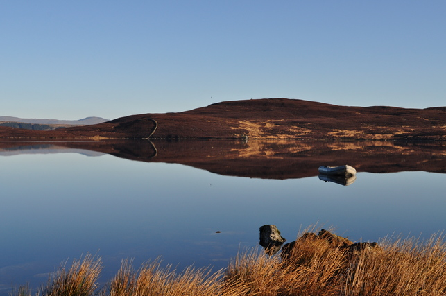
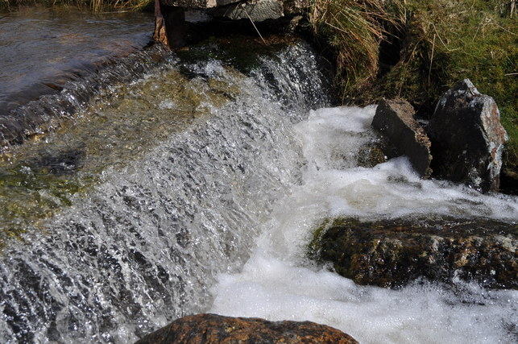
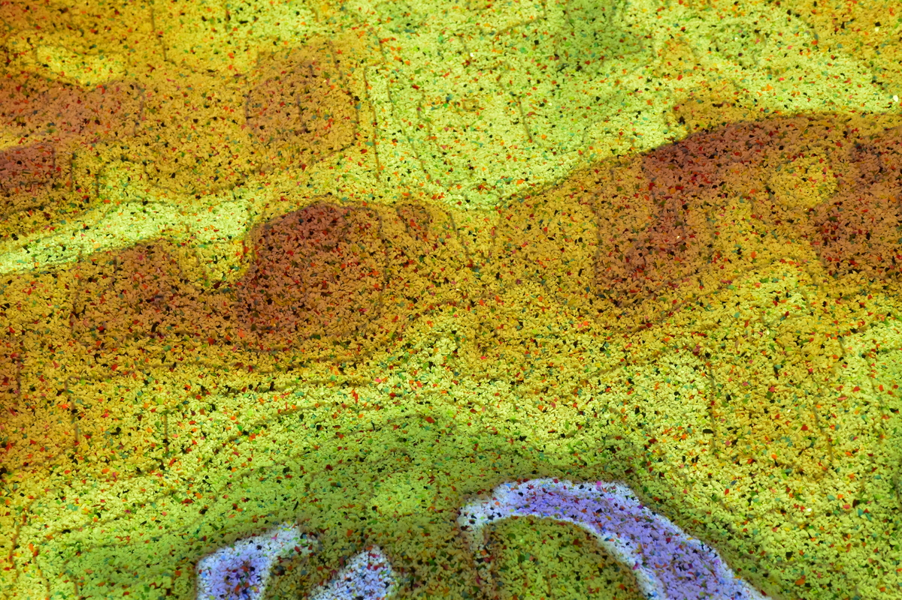
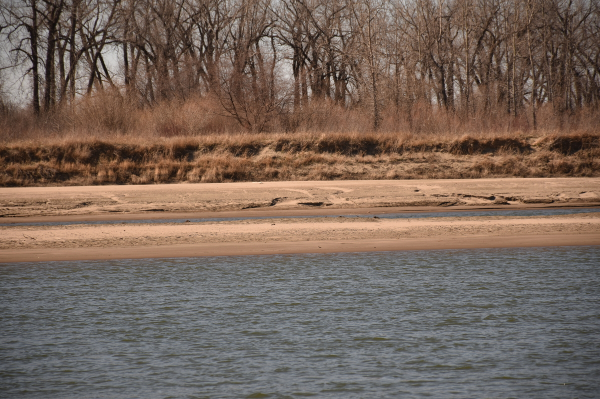
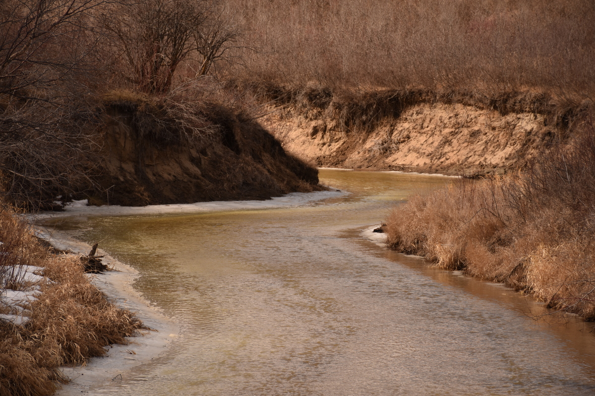

EMPOANDES: EMPOwer ANDES societies to improve adaptation to climate change through co-creation of climate services capacities
The EMPOANDES project aims to strengthen the capacity of Andean societies to adapt to climate change through the co-creation of climate services, with a focus on improving understanding, access to, and use of climate information. The project will work with communities, governments, organizations, students, professionals, and citizens at local, national, and regional scales through educational programs, training, technical tools, and decision-support resources. It will also promote advances in climate data management, regional climate modeling, and the integration of climate information with impact models, bringing together European and Latin American universities, meteorological and hydrological services, and regional climate institutions across the Andes.
- Funding source: European Union (UE)
- Budget:US$125,000
- Duration: 12/2025 - 12/2028
- Team: Erasmo Rodríguez (PI) and Luis Morales-Marín (co-PI)

Validation of Water Levels in the San Rafael and Chuza Reservoirs of the Chingaza System Using the Surface Water and Ocean Topography (SWOT) Satellite
This study evaluates the accuracy of the Surface Water and Ocean Topography (SWOT) satellite for monitoring water levels in the San Rafael and Chuza reservoirs, key components of Bogotá’s Chingaza water supply system. SWOT altimetry data will be processed and compared with historical in situ measurements from local authorities, harmonized to the EGM2008 reference system. Statistical metrics, including bias, RMSE, MAE, and Pearson’s correlation, will be used to assess the agreement between satellite and ground observations. The results will provide a first local validation of SWOT water-level measurements in Colombia and assess its potential for reservoir monitoring, drought analysis, and water-resource management.
- Funding source: Faculty of Engineering, Universidad Nacional de Colombia
- Budget: US$30,000
- Duration: 06/2025 - 07/2026 WO
- References: Analysis and Validation of Water Surface Data in Two Reservoirs of Bogotá’s Water Supply System Using SWOT and Sentinel-2 Satellite Products. Leal J., Páramo E., Barrios A., Morales-Marín L. and Rodríguez E. (In preparation).

Hydraulic Modeling of Overflow Spillways at Thermal Power Plants
This project aims to improve the efficiency and reduce the environmental impact of thermal power plants in Colombia by enhancing the accuracy of wastewater discharge measurements. It investigates whether discharge flows are being measured appropriately according to their hydraulic conditions and evaluates the measurement systems using dimensional analysis, numerical modeling, and physical experiments. The project will produce technical reports, experimental data, a representative physical model, and a validated numerical model to support more accurate water management, regulatory compliance, and environmental sustainability.
- Funding source: Faculty of Engineering, Universidad Nacional de Colombia
- Budget: US$5,000
- Duration: 06/2025 - 04/2026
- Team: Luis Morales-Marín (PI), Leonardo Donado (co-PI), Adriana Piña (co-PI), Miguel Acevedo, Flor Marulanda, Natalia Toval and Valentina Fonseca

Multi-Scale Assessment of the Interaction of Physical, Chemical, and Biological Processes in the Prospectivity of Unconventional Subsurface Energy Resources – SHATKI Project
The SHAKTI Project investigates the multi-scale interactions of physical, chemical, and biological processes that influence the potential of subsurface reservoirs for unconventional energy resources, with a focus on carbon capture and geological storage (CCS). The project combines geological, geochemical, and microbiological analyses with microfluidic experiments and stochastic numerical modeling to characterize CO₂ storage processes, quantify uncertainty, and assess storage capacity, stability, and risks. Its results will provide experimental data and predictive models to support safer, more efficient, and environmentally sustainable geological CO₂ storage as a climate-change mitigation strategy.
- Funding source: Ministerio de Ciencia, Tecnología e Innovación (MINCIENCIAS)
- Budget:US$900,000
- Duration: 07/2025 - 01/2027
- Team: Leonardo Donado (PI), Adriana Piña (co-PI), Luis Morales-Marín (co-PI) and Carlos Vargas

Meteorological and Hydrological Drought Analysis and Early Warning System for Bogotá and the River Basins and Reservoirs Supplying the City
This project aims to design and implement a meteorological and hydrological drought analysis and early warning system for Bogotá and the river basins and reservoirs that supply the city. The nine-month initiative will combine ground-based observations, remote sensing, regional climate model outputs, and macroclimatic indicators to characterize historical drought conditions and develop near-real-time monitoring capabilities. Artificial intelligence techniques will be used to develop drought forecasting models, while a free online dashboard will integrate historical information and forecasts to support authorities in improving water-resource management and responding more effectively to drought events.
- Funding source: Agencia Distrital para la Educación Superior, la Ciencia y la Tecnología (ATENEA)
- Budget:US$70,000
- Duration: 07/2025 - 07/2026
- Team: Erasmo Rodríguez (PI), Luis Morales-Marín (co-PI), Juan Amaris, Lucia Salazar, Santiago Garcia and Nicolas Gutierrez
- References: Development of an Integrated Drought Monitoring and Forecasting System for Bogotá and Its Water Supply Basins, Colombia. Rodríguez E., Morales-Marín L., Amaris J., Ortega J., Salazar M., Olarte M., Morales K. and Garcia S. (In preparation).

Hydrological Forecasting System for Flood Vulnerability and Risk Assessment in the Guatiquía River Basin, Meta, Colombia
This outreach project aims to develop an operational hydrological forecasting system for the Guatiquía River Basin in Meta, Colombia, with a particular focus on the San Juan Bosco area of Villavicencio, where riverside communities are frequently affected by flooding. The project will implement an ensemble of hydrological models to reconstruct historical flows, forecast river discharge 1–5 days in advance, and assess flood vulnerability and risk. The system will operate through an online platform providing communities with information on current and forecast river conditions, supporting flood preparedness, risk management, and community resilience.
- Funding source: Faculty of Engineering, Universidad Nacional de Colombia
- Budget:US$16,000
- Duration: 10/2025 - 10/2026
- Team: Luis Morales-Marín (PI), Erasmo Rodríguez (co-PI), Daniel Rivera, Paula Rodríguez, Alex Mateus, Vladimir Angulo and Fernando Jaramillo